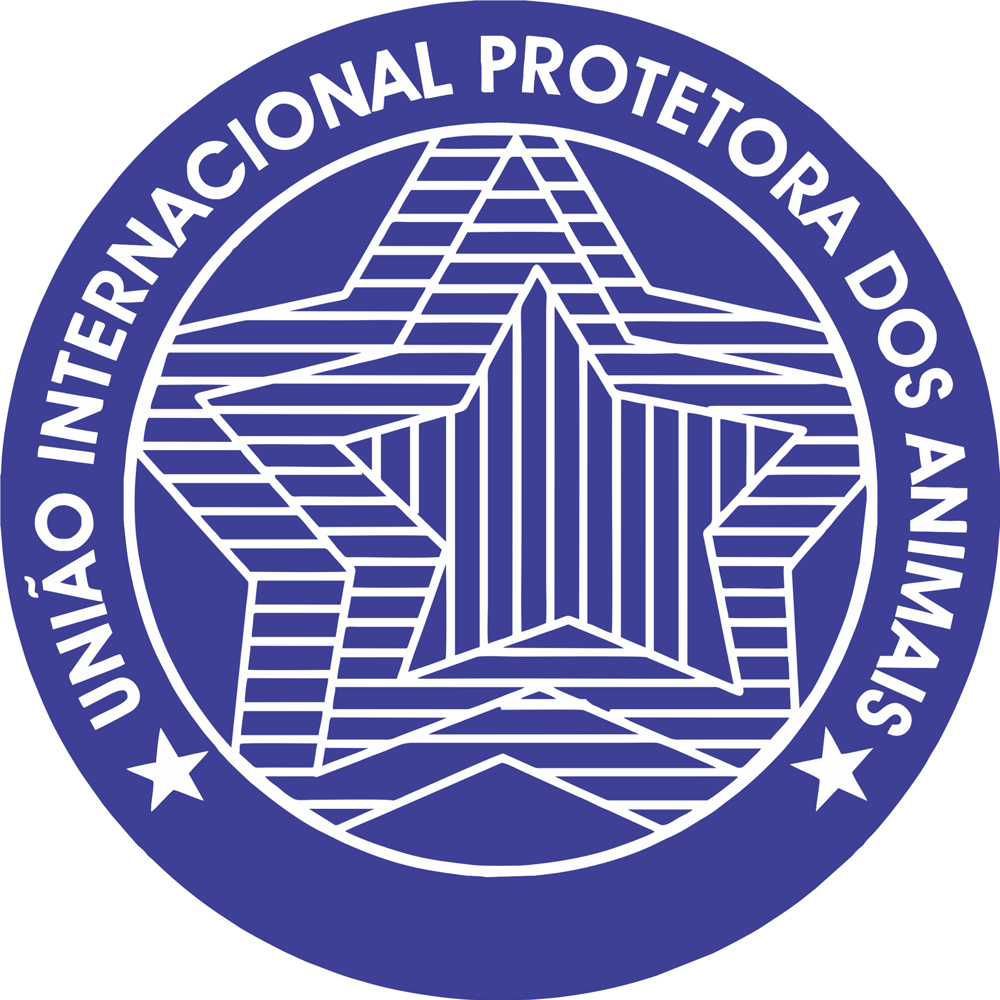

UIPA - União Internacional Protetora do Animais
A UIPA é a associação civil mais antiga do Brasil, fundada em 1895, sua missão é a luta contra o abuso e a exploração dos animais, promovendo a educação sobre questões de bem-estar animal, defendendo leis de proteção mais rigorosas, juntamente com a promoção de adoção responsável de animais de estimação e o combate ao abandono.
A UIPA se estabeleceu como uma voz importante no cenário internacional de proteção animal, colaborando com outras organizações similares e influenciando políticas e legislações em vários países e continua a desempenhar um papel vital na defesa dos direitos dos animais e na busca por um mundo onde os animais sejam tratados com respeito e compaixão.
Projeto Tamar
O Projeto Tamar é um programa brasileiro de conservação e pesquisa que se dedica à preservação das tartarugas marinhas, foi criado em 1980. A história do Projeto Tamar está intrinsecamente ligada à preocupação com a situação das tartarugas marinhas no litoral brasileiro, com a missão de promover a recuperação das tartarugas marinhas, através de ações de pesquisa, conservação e inclusão social.
O Projeto Tamar conseguiu conquistas significativas ao longo dos anos, como a redução das taxas de mortalidade de tartarugas marinhas e o aumento das chances de sobrevivência de seus filhotes.
Suas ações contribuem para aumentar a conscientização da população sobre a importância da proteção das tartarugas marinhas e dos ecossistemas marinhos como um todo, além de atividades de envolvimento comunitário, valorização da cultura local e geração de oportunidades de trabalho e renda.
Sendo reconhecido internacionalmente como uma das mais bem sucedidas experiências de conservação marinha, sobretudo porque envolve as comunidades costeiras diretamente no seu trabalho socioambiental.
Aquasis -Associação de Pesquisa e Preservação de Ecossistemas Aquáticos
A Associação Aquasis é uma organização não governamental brasileira, fundada em 1992, há quase 30 anos, dedicada à proteção de espécies ameaçadas e habitats importantes para a conservação da biodiversidade no Ceará.
Sendo, uma das instituições conservacionistas mais respeitadas do país, é uma instituição comprometida não apenas com a conservação de espécies ameaçadas de extinção, como também tem o objetivo de fomentar ações que promovam o protagonismo das comunidades locais, ampliando seu potencial de desenvolvimento sustentável, trabalhando sempre em parceria com lideranças e membros do poder público dos municípios onde suas bases se encontram.
Hoje, a Aquasis conta com três frentes de atuação: o Programa de Mamíferos Marinhos (PMM), o Programa de Aves (PAM) e o Núcleo de Educação Ambiental (NEA), todas com o intuito de alcançar seus objetivos de conservação.